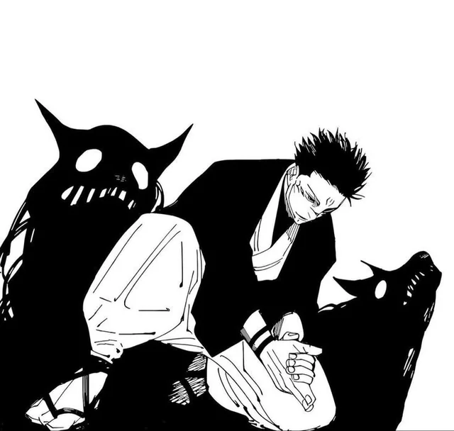
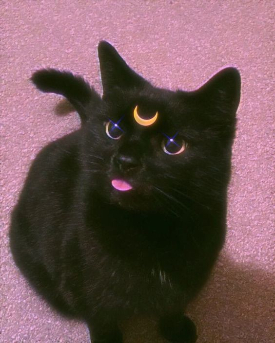
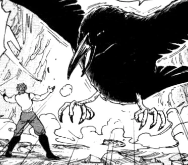
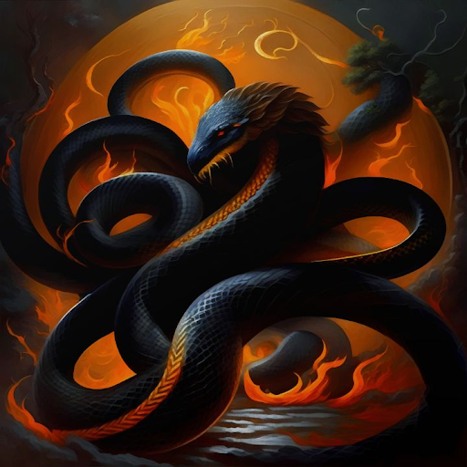
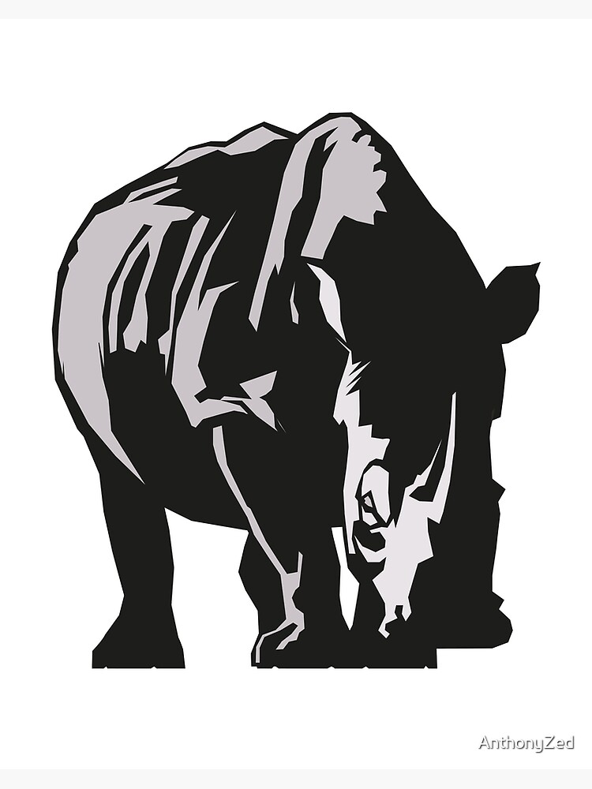
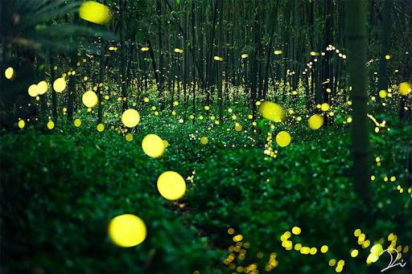
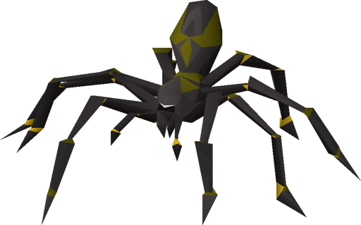

| Description |
CE Cost |
Image |
| Divine Dogs are a pair of twin wolves capable of tearing curses apart with their fangs and devouring them. Each of the dogs can detect curses and notify their master when one gets close. Their tracking abilities allow them to find lost allies and locations |
Divine dogs - 15 CE Summon
Curse Devour 10 CE - Bite attack deals bonus damage. On kill: regain 5 CE
Lunar Claws 5 CE - covers in lunarfied cursed energy (+ 1d6 damage)
|
 |
| Tsukigiri dawns a raven black cloak that jumps between moonlit shadows. Its feline-esque claws are sharp, and are covered with lunarfied cursed energy that is able to disrupt cursed energy flow. Tsukigiri is very fragile, with low raw damage focusing on precision, and vision sharing can cause sensory lag after prolonged use. If dispelled the user experiences disorientation. |
Tsukigiri (Kitty Cat) - 15 CE Summon
Dispellment - if destroyed or dismissed: User is disorientated (Disadvantage for 1 turn)
Disruptive Claw 5 CE - Target has disadvantage on its next attack roll or ability check using cursed energy (1d8 + spellcasting stat)
Shadow Step 5 CE - User teleports up to 20ft between connected shadows. Must start and end in dim light, Darkness or a Shadow.
|
 |
| Nue is a tall, crow-like shikigami with blade-like wings capable of delivering strong, powerful long range wind infused slashes. Nue's advanced mobility allows for flight which allows for its support to be more versatile. |
Nue 15 CE Summon
Crescent Gale 10 CE - Fire a compressed blade of wind. 60ft Slash (3d6 slashing + 1d6 force)
Aerial Repositioning (Bonus Action) 5 CE - Dash or disengage.
|
 |
| Lunarbound: Imaginary Kitsune is a sleek fox-like shikigami formed out of lunarfied liquid shadow, with faint, glowing violet eyes. The Kitsune creates many illusionary clones of the summoner and other summons without their full abilities, these illusions grow with time as when beginning they are incomplete, lacking features and the curse energy difference being noticeable. If the main body of the Imaginary Kitsune is damaged, then the shikigami is rendered unusable and is sent into a recovery period.
|
Imaginary Kitsune 15 CE Summon
Masquerade (Passive) - User gains an advantage on Stealth checks whilst at least one illusion of them exists.
Illusions 10 CE - creates 2-3 illusionary clones (Illusions Maturity 5 CE per round - each round illusions become harder to distinguish)
Mirror Relay (Reaction) 5 CE - Swap Positions with an illusion within 40 ft. Illusion is destroyed, attack automatically misses
False Command 50 CE - One illusion performs a convincing casting or attack motion. (Opponent rolls a wisdom save, on failure enemy spends an action on a false response)
|
 |
| Lunarbound: Blazing Serpent (Max Technique) is a long serpentine shikigami formed out of lunarfied liquid shadow. This shikigami has pulses with purple fiery veins beneath its surface that allows it to harden and wrap around enemies or terrain, able to ignite everything it constricts. However, the fire requires large amounts of curse energy in order to maintain which in turn the summoner may be unable to sustain the flames, ending them prematurely. If the flames of the Blazing Serpent die out, the shikigami is rendered unusable and sent into a recovery period.
|
Blazing Serpant 20 CE Summon
Serpant Coil 5 CE every turn - Wraps around creature or terrain (Grappled creature makes a strength or dexterity save, if failed, restrained takes 2d6 fire damage + 1d6 force damage. If success half damage, no restrained)
Hardened scales 10 CE - Hardening ones body (Gain resistance to all types of slash damage until end of turn)
Igniting Constriction 5 CE every turn - Ignites anything within its constraints (3d6 fire damage to targets within grapples)
|
 |
| Lunarbound: Waning Kuma dawns a sleek, silver colour formed out of lunarfied liquid shadow. The shikigami sends out a wide range AOE called “Waning Pressure” that slows down opposing cursed energy circulation and causes heavier cursed technique startup. This effect ramps up the longer the Waning Kuma is active on the field making it ineffective in short fights. However, the shikigami is almost permanently stationary in where it's summoned, making and its effect requires constant cursed energy to fuel it. If the Waning Kuma takes too much damage, the shikigami is rendered unusable and sent into a recovery period.
|
Lunarbound: Waning Kuma 20 CE Summon
Waning Pressure 15 CE + 5 CE/round - 30ft radius centered on user. (Effects - Disadvantage on concentration, start up for spells, cursed techniques and special abilities increased by 1 round)
Cumulative Stagnation - Enemies that stay within the aura for 3+ rounds have disadvantage on all attack rolls.
|
|
| Midnight Rhino is a powerful and brute beast with a raging horn to pierce enemies. Made of a condensed shadowy mass, the shikigami is resistant to piercing and slashing damage. It is able to pierce and stomp with immense force, being able to send shockwaves through shadows. Its main ability is being able to absorb a limited amount of curse energy into its shadowy mass, being able to rebound that cursed energy and utilise it in its shockwaves. However, if the Midnight Rhino absorbs too much cursed energy before discharging it, it can cause the shikigami to combust, rendering it unusable, sending the shikigami into a recovery period.
|
Midnight Rhino 20 CE Summon
Absorption Engine(reaction) - when a cursed technique or CE-based attack occurs within 10ft. Maximum Capacity: 30 CE
Midnight Pierce 10 CE - Heavy horn attack (2d8 pierce + force damage)
Rebound Shockwave 10 CE + discharge stored energy - Release stored CE in a massive shockwave, 20-ft radius. Damage increases per 5 CE discharged
Emergency Ejacultion All stored energy - Release stored CE harmlessly. Lose next action
Overflow Combustion - If Midnight Rhino has more than 30 Cursed energy absorbed, combust immediatly. Deals 4d10 force damage in 15ft radius.
|
 |
| Forest of Fireflies is a swarm of tiny, glowing orbs made of condensed shadow and light. When gathered, the swarm can form shadow shapes like walls or projectiles. The swarm is able to mark enemies and positions with faint curse energy pulses that can cause minor curse energy detection disruption, and on a large scale can form a veil to disrupt curse energy sensing, and visibility.
|
Forest of Fireflies 10 CE Summon
Shadow Construction 10 CE + 5 CE per round - Gather the swarm into shapes: walls, barriers projectiles (barrier/wall = 20ft 10hp. Duration - 2 action turns. Projectile = d6 bludgeoning damage.)
Cursed Marker - Marks enemies and locations with an cursed energy pulse
(cause slight disruption to cursed energy detection)
Veil of Fireflies 10 CE + 10CE per round - 30ft, cursed sensing impaired
|
 |
| Phantasmal Spider is a large colossal spider that strings webs of shadow to constrict around targets. The webs of shadow are able to constrict cursed energy flow and movement. This shikigami looks at the opponent's cursed energy and requires more cursed energy from the user if the opponent has higher cursed energy.
|
Phantasmal Spider 15 CE
ShadowBinds 10 CE (+5 CE if target has higher cursed energy then user) - Target makes a strength or dexterity save. On fail: Restrained, Movement speed becomes 0, Cursed Energy Flow disrupted, disadvantage on spell attacks & Concentration. Each additional target restrained costs +5 CE per round
Constricting Threads 5 CE per round - Maintains Restraint, Each round target takes force damage. Target makes Strength or Dex Save whilst restrained.
Energy Siphon 10 CE - Drains CE trogh the web. Target loses access to reactions or bonus actions next turn. User regains 5 CE fails con save
Web Walk (User) 5 CE - User can move through spider webs freely, Can walk on walls/Ceilings for 1 turn
|
 |